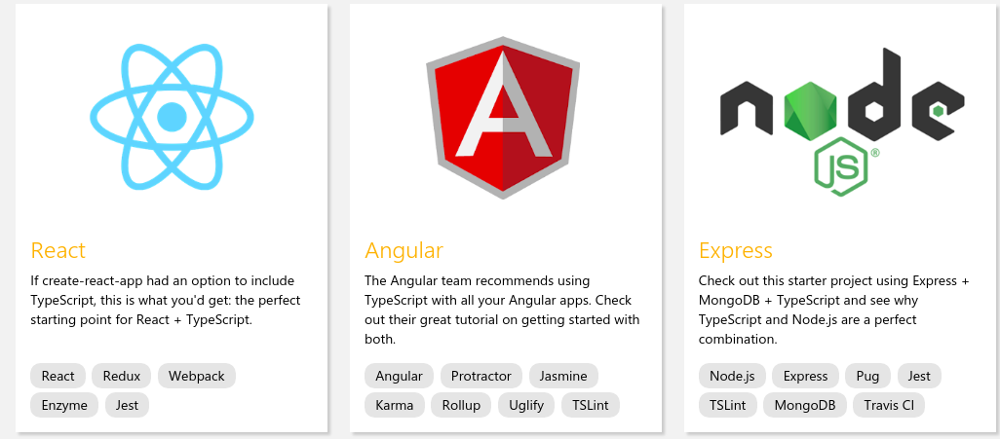
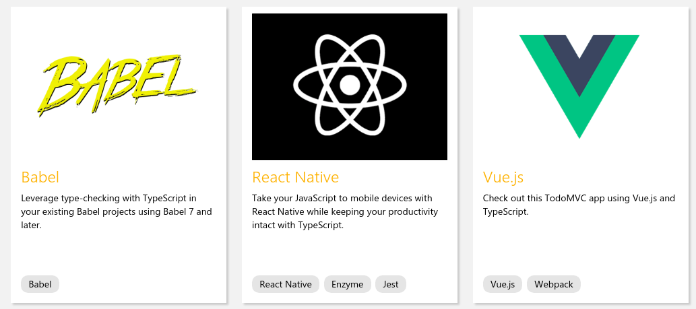
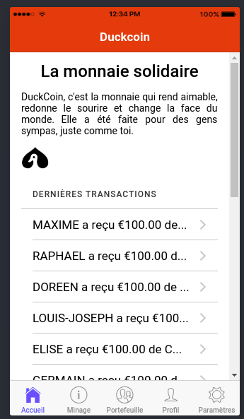

Chap 6 - Introduction au langage TypeScript, le futur de JavaScript
TypeScript est un langage de programmation libre et open source développé par Microsoft qui a pour but d'améliorer et de sécuriser la production de code JavaScript. Sortie en 2012, Il est vu par beaucoup comme le futur du Javascript, car se basant en sur la norme ECMAScript 6, celle déjà intégré au moteur JavaScript de la plupart des navigateurs et qui fera foi dans les prochaines années.
TypeScript c'est donc du JavaScript, avec de supers pouvoirs, utilisé par la plupart des Frameworks JavaScript du moment.

Les fichiers définis dans ce langage ont pour extension .ts. Les navigateurs web ne sachant pas encore interprété du code en TypeScript pur, il est nécessaire de le compiler en JavaScript : on parle alors de transtypage.
Installation
Ionic utilise une version "interne" de TypeScript, mais pour nos tests nous allons devoir installer le package de manière globale.
> npm install -g typescript
Un premier script
Créons un fichier à la racine du projet demo_typescript.ts et tant qu'à faire ajoutons-y du contenu :
demo_typescript.ts
function ditBonjour(person) {
return "Bonjour, " + person;
}
let user = "Raphael";
document.body.innerHTML = ditBonjour(user);
Il faut ensuite, compiler ce code pour générer un fichier .js interprétable par le navigateur.
$ tsc demo_typescript.ts
$ ls -l
total 304
-rw-rw-r-- 1 cee cee 6180 avril 11 22:14 config.xml
-rw-rw-r-- 1 cee cee 131 avril 13 07:12 demo_typescript.js
-rw-rw-r-- 1 cee cee 133 avril 13 07:04 demo_typescript.ts
demo_typescript.js
function ditBonjour(person) {
return "Bonjour, " + person;
}
var user = "Raphael";
document.body.innerHTML = ditBonjour(user);
Bien évidemment le contenu du fichier demo_typescript.js est strictement le même que celui du fichier .ts, car ce code est relativement simple.
Mais tout l'intérêt de TypeScript est surtout de pouvoir ajouter à JavaScript des notions de classes, d'interface, d'héritage ou de Polymorphisme,...
Créons une classe Licence et ajoutons-y des paramètres et quelques méthodes au passage.
Types de base
Contrairement à JavaScript où les types sont définis au remplissage d'une variable, TypeScript propose un typage de variable beaucoup plus fort.
La définition générale d'une variable se fait de la manière suivante :
let nomDeLaVariable: leTypeDeBase [= valeur par défaut - Optionnel];
Booléens
let isConnected: boolean = false;
Nombres
let valeur_decimal: number = 6;
let valeur_hex: number = 0xf00d;
let valeur_binary: number = 0b1010;
let valeur_octal: number = 0o744;
String
let color: string = "blue";
color = 'red'; # On a le choix entre les guillemets simples ou doubles
Chose intéressante pour les chaînes de caractères, il est possible de les utiliser sous forme de template, un truc que l'on rencontrait jusqu'à lors dans des langages de haut niveau comme Python.
let fullName: string = `Charles EDOU NZE`;
let age: number = 30;
let sentence: string = `Salut, mon name est ${ fullName }.
J'aurai ${ age + 1 } ans à la fin de l'année.`;
Ceci est l'équivalent de concaténer des chaines de caractères avec le signe "+".
Les tableaux
let list_nombres_premiers: number[] = [2, 3, 5, 7, 11, 13, 17, 19, 23, 29, 31];
Any
On l'utilise quand on ne sait pas trop qu'elle type de données on aura à traiter. C'est souvent le cas quand on utilise un API proprietaire.
let variableApi: any = 4;
variableApi = "c'est une chaine de caractère";
variableApi = false; // ou un booléan finalement
Les Classes et les méthodes
Un des gros avantages de TypeScript est la possibilité de créer des classes, ce qui n'était pas tout à fait (au sens strict) en JavaScript, même s'il était possible de créer un genre de classe avec l'attribut prototype.
Les méthodes elles sont équivalentes aux fonctions JavaScript, mais le mot clé "function".
class classeMmi {
intervenant: string;
etudiants: string[];
constructor(intervenant: string, etudiants:string[]) {
this.intervenant = intervenant;
this.etudiants = etudiants;
}
getIntervenant() {
return "L'intervenant actuel s'appelle " + this.intervenant;
}
getEtudiants() {
return this.etudiants;
}
}
let classeLPMim = new classeMmi("charles", ['etudiant1','etudiant_n']);
classeLPMim.getIntervenant() // Retourne L'intervenant actuel s'appelle charles
Les itérateurs
Boucle for..of
Cette boucle permet d'afficher les éléments d'une liste pure.
let unArray = [1, "deux", 'trois'];
for (let valeur of unArray) {
console.log(valeur); // 1, "deux", "trois"
}
cette boucle est aussi celle qu'il faudra utiliser quand on voudra boucler sur des listes d'objets :
let unArrayObjets = [{'nom':'etudiant 1', 'num':1}, {'nom':'etudiant 2', 'num':2}];
for (let item of unArrayObjets) {
console.log(item.nom); // etudiant 1 etudiant 2
}
Boucle for..in
Reprenons le code précédent, mais en utilisant la boucle for..in
let unArray = [1, "deux", 'trois'];
for (let index in unArray) {
console.log(index); // 0, 1, 2
}
La boucle renvoie en fait les indexes de chaque valeur et ne doit être utilisé dans ce cas là que si l'on souhaite vraiment récupérer les indexes d'un tableau.
Mais le véritable intérêt pour moi de la boucle for..in est de pouvoir boucler sur les propriétés d'un objet.
let etudiant = {'nom':'Etudiant 001', 'num':1};
for (let cle in etudiant) {
console.log(etudiant[cle]) // Renvoie Etudiant 001
}
Et un petit résumé de ce que renvoie l'une ou l'autre des deux boucles :
let list = [4, 5, 6];
let etudiant = {'nom':'Etudiant', 'num':1};
for (let i in list) {
console.log(i); // "0", "1", "2",
}
for (let i of list) {
console.log(i); // "4", "5", "6"
}
Calculs et transformations sur les listes avec map, filter et reduce
cd
https://code.tutsplus.com/tutorials/how-to-use-map-filter-reduce-in-javascript--cms-26209
https://scotch.io/tutorials/list-processing-with-map-filter-and-reduce
Les conditions
Comme en JavaScript. On retrouve les tradionnels "if..else" , "switch...case" :
if(une_conditon) {
// La condition est vraie
} else {
// Elle est fausse
}
Et un switch-case :
switch(meteo) {
case 'soleil': {
//Il fait beau
break;
}
case 'pluie': {
// Il fait moins beau
break;
}
default: {
// devine
break;
}
}
Constantes
Une constante comme son nom le suppose est censé de ne pas être changé par la suite ou redéfini par la suite. On pourra par exemple y stocker une URL d'une API.
const apiUrl = 'https://duckcoin.charlesen.fr';
Comment TypeScript s'intègre à Ionic
En fait, TypeScript est présent partout ou presque dans Ionic. Les classes définies dans les fichiers .ts de chaque page sont écrites, comme vous vous en doutiez surement, en TypeScript :
export class HomePage {
selected : any = '';
items : any = [];
constructor(public navCtrl: NavController) {
this.items = [
{'title':'Bitcoin', 'currency':'btc', 'price':'5000€'},
{'title':'Ethereum', 'currency':'eth', 'price':'500€'},
{'title':'Ripple', 'currency':'xrp', 'price':'0.4€'}
];
}
itemSelected(item) {
this.selected =item;
}
}
Exercez-vous
1) On veut afficher la liste des dernières transactions de la Blockchain sous forme de liste dans l'onglet Accueil, tout en bas du texte de bienvenue.On définit la liste de transactions ci-dessous :
this.transactions = [
{
'sender': 'charles',
'recipient': 'maxime',
'amount': 100,
},
{
'sender': 'charles',
'recipient': 'raphael',
'amount': 100,
},
{
'sender': 'charles',
'recipient': 'doreen',
'amount': 100,
},
{
'sender': 'charles',
'recipient': 'louis-joseph',
'amount': 100,
},
{
'sender': 'charles',
'recipient': 'elise',
'amount': 100,
},
{
'sender': 'charles',
'recipient': 'germain',
'amount': 100,
},
{
'sender': 'charles',
'recipient': 'anthony',
'amount': 100,
},
{
'sender': 'charles',
'recipient': 'pol',
'amount': 100,
},
{
'sender': 'charles',
'recipient': 'vincent',
'amount': 100,
},
{
'sender': 'charles',
'recipient': 'nicolas',
'amount': 100,
},
{
'sender': 'charles',
'recipient': 'kevin',
'amount': 100,
},
{
'sender': 'charles',
'recipient': 'willy',
'amount': 100,
},
{
'sender': 'charles',
'recipient': 'elodie',
'amount': 100,
},
{
'sender': 'charles',
'recipient': 'adrien',
'amount': 100,
},
{
'sender': 'charles',
'recipient': 'romain',
'amount': 100,
},
{
'sender': 'charles',
'recipient': 'quentin',
'amount': 100,
},
{
'sender': 'charles',
'recipient': 'jean-etienne',
'amount': 100,
},
{
'sender': 'charles',
'recipient': 'gael',
'amount': 100,
}
];
En vous basant sur ce qui a été fait précédemment avec la liste des cryptomonnaies Bitcoin, Ethereum et Ripple, faites en sorte que l'on puisse visualiser la liste des dernières transactions en Page d'accueil.
3) Le signe dollar ($) de la liste est ajouté automatiquement grâce à un pipe Angular (concept abordé au chapitre 7). Comment d'après la documentation suivante, est-il possible de remplacer le $ en € ? Puis € en DRT ? https://angular.io/api/common/CurrencyPipe.

2) Faites qu'en cliquant sur une ligne de la transaction, on affiche une fenêtre modale, avec le résumé de la transaction :
https://ionicframework.com/docs/components/#modals
P.S : il est possible de passer des paramètres à une fenetre modale, puis de les récupérer dans la fenetre concernée :
Ouverture de la fenêtre avec passage de paramètres :
import { ModalController } from 'ionic-angular';
import { MaPageModal } from './modal/modal'; // la page modale est dans le meme dossier que la principale
export class MaPage {
constructor(public modalCtrl: ModalController) {
}
presentModal() {
let modal = this.modalCtrl.create(ModalPage, {'monParam':'Ceci est un paramètre'});
modal.present();
}
}
Récupération des données dans la classe de la fenêtre :
export class MaPageModal {
unParamVenuDeLoin : any;
constructor(
public platform: Platform,
public params: NavParams,
public viewCtrl: ViewController
) {
this.unParamVenuDeLoin = this.params.get('monParam')
}
dismiss() {
this.viewCtrl.dismiss();
}
}